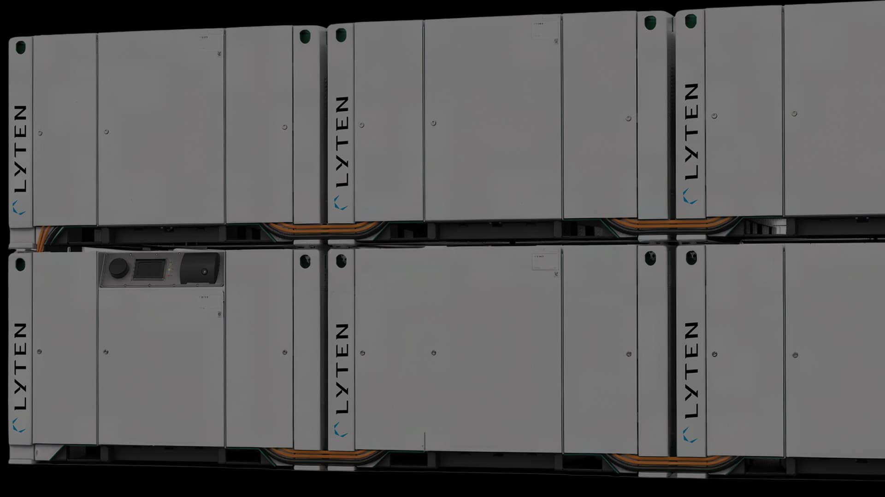

Real-time machine performance data
Elinext built an Industry 4.0 platform that pulls factory-machine data into operational insight for better OEE decisions.
Read case studySaw Lyten Poland is hiring a Backend Engineer for its BESS cloud platform. Here is how we would help turn that signal into a focused build plan.

Your Backend Engineer signal reads like more than normal hiring. Lyten Poland is turning the Gdansk BESS site into cloud-connected energy infrastructure. The role asks for services, AWS, Terraform, and IoT telemetry for the BESS cloud platform. That means the hard part is not one API. It is dependable ingestion, alerts, and data use across battery systems, embedded teams, TechOps, and customers. If that layer grows slowly, VMS rollouts can wait on the same core engineers who also own production risk.
Map the route from edge controller to cloud storage, then mark which alarms must be real time and which can lag.
Add a short BESS cloud brief for buyers who ask about monitoring, uptime, and data integration before pilots.
We would work under Lyten's Product Owner or PM, with weekly demos and a narrow BESS cloud slice.
Define event schemas, failure states, and replay rules for VMS telemetry before new services split across teams.
Build a hardened AWS intake path with Terraform-style infrastructure and clear runbooks for TechOps handoff.
Expose health, alarms, and asset status through a simple service API that frontend teams can consume safely.
Add load tests, alert tests, and release checks for late events and battery-system edge disconnects.
Elinext built an Industry 4.0 platform that pulls factory-machine data into operational insight for better OEE decisions.
Read case study
Elinext built status, warning, and alarm software for port equipment, using Python, Angular, Redis, and Electron.
Read case study